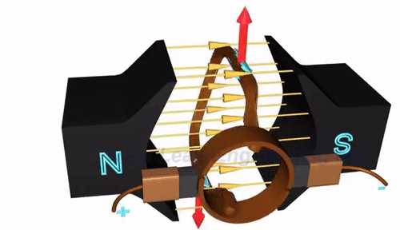
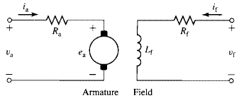
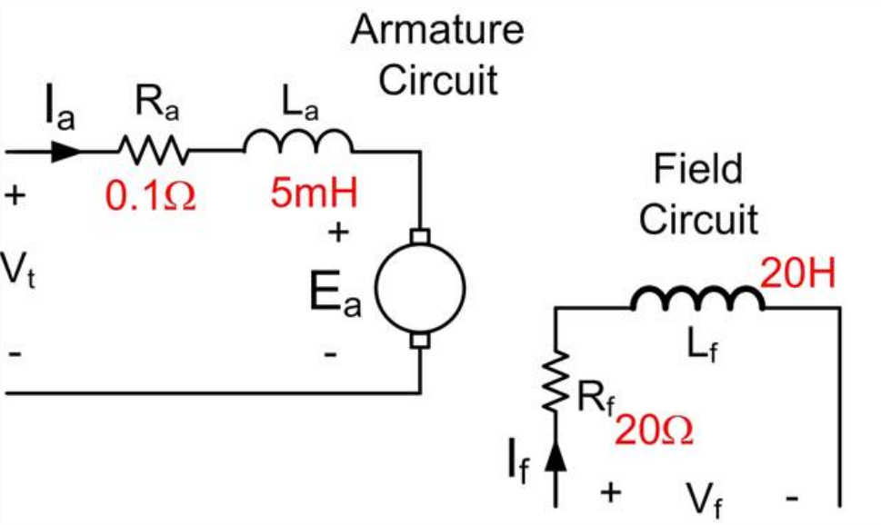
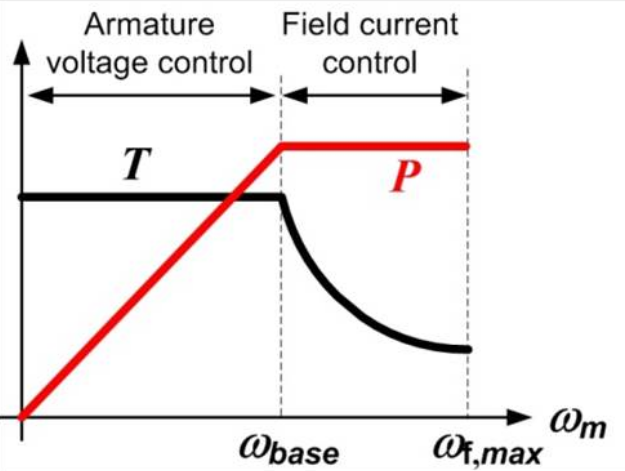
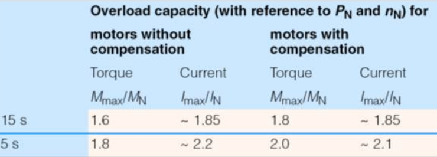

class: center, middle # EE-462 UTILIZATION OF ELECTRICAL ENERGY # DC Motors ## Ozan Keysan ## [keysan.me](http://keysan.me) ### Office: C-113 <span class="meta">•</span> Tel: 210 7586 --- # Operation Principle of DC Motors -- #Lorenz Force ## \\(\vec{F} = \vec{J} \times \vec{B}\\)  #### [Magnetic Force and Relativity](http://www.youtube.com/watch?v=1TKSfAkWWN0) --- # DC Machine Working Principle  ### [How DC motors work?](http://www.youtube.com/watch?v=LAtPHANEfQo) --- # Ways to increase torque in a DC Motor? -- - ## Increase Field Density (More Magnet, or less reluctance) -- - ## More Current (Limited by cooling) -- - ## Increase the length (force increases) -- - ## Increase the radius (torque increases) --- # DC Machine Parts <img src="https://evmc2.files.wordpress.com/2014/12/step2_img01.jpg" alt="Drawing" style="width: 750px;"/> --- # Model of DC Motors <img src="http://image.slidesharecdn.com/new-economic-models-of-search-2-140709223709-phpapp01/95/modelling-search-interaction-with-economic-models-4-638.jpg" alt="Drawing" style="width: 750px;"/> --- #Simplest Equivalent Circuit of a DC Machine ### A voltage source (proportional to speed) connected in series with a resistance (Armature resistance) -- <img src="http://www.electrical4u.com/images/equivalent-circuit-of-pmdc-.gif" alt="Drawing" style="width: 400px;"/> ### Under constant flux (as in permanent magnet DC machine) --- # Induced Voltage in Armature -- # \\(E\_a = K\_a \omega\_m \Phi\_{pp}\\) -- - ### \\(E\_a\\): Induced armature voltage - ### \\(K\_a\\): Armature Constant - ### \\(\omega\_m\\): Mechanical Speed (rad/s) - ### \\(\Phi\_{pp}\\): Flux per-pole --- # DC Machines -- ## Motor Action: Electrical Energy is converted to Mechanical Energy -- ## Generator Action: Mechancial Energy is converted to Electrical Energy -- ## No difference between a [DC motor and generator](http://www.youtube.com/watch?v=6kgzrXFSDwA) ## Just a mode of operating point --- # Electromechanical Power  ### Electromechanical Power = Armature Power - Armature Losses -- ## \\(P\_{e} = V\_a I\_a - I\_a R\_a = E\_a I\_a \\) --- # Electromechanical Power ## Electromechanical Power = \\(E\_a I\_a \\) ### Either converted from electrical energy to mechanical energy (motoring mode) ### or converted from mechanical energy to electrical energy (generating mode) --- # Torque Relations ## \\(P\_{mech} = \\) -- \\( T \omega = E\_a I\_a \\) -- ## \\( T \omega = K\_a \omega \Phi\_{pp} I\_a \\) -- ## \\(T =K\_a \Phi\_{pp} I\_a \\) --- # Torque Proportional to Current # \\(T =K\_a \Phi\_{pp} I\_a \\) --- # What happens to DC motor at start-up? -- ## Rotor speed is zero: \\(\omega =0 \\) ### Induced armature voltage: -- \\(E\_a = K\_a \omega\_m \Phi\_{pp}=0\\) -- ## Armature Current: \\(I\_a = (V\_t -E\_a)/R\_a\\) ## Maximum Torque at Startup --- ## Speed Control of DC Motors -- - ## Armature Voltage Control (\\(V_t\\)) -- - ## Field Current Control (\\(I_f\\)) (and hence flux) -- - ## Vary Both --- # Armature Voltage Control -- - ## Speed Control over a wide range - ## Commonly used --- # Armature Voltage Control <img src="http://www.electrical4u.com/electrical/wp-content/uploads/2013/04/voltage-control-9-3-15.gif" alt="Drawing" style="width: 800px;"/> --- # Field Current Control -- - ## An external resistor or variable voltage supply -- - ## Usually used to achieve higher speeds --> -- Decrease \\(I_f\\) (Flux weakening) -- - ## Speed control over a narrow range --- # Field Current Control <img src="http://www.electrical4u.com/electrical/wp-content/uploads/2013/04/Field-Flux-Control-of-DC-Motor-9-3-15.gif" alt="Drawing" style="width: 800px;"/> --- # Field Current Control -- ### Which one is larger \\(L_a\\) or \\(L_f\\)? -- ### Field current is easier to control due to low current values, but has a much higher electrical time constant -> sluggish response  ### \\(\tau_a = 50ms \quad\quad \tau_f = 1s\\) --- ## Armature-Field Current Control ### Armature Voltage Control region is also known as Constant Torque region -- ### Field Current Control region is also known as Field Weakening or Constant Power region. --- ## Armature-Field Current Control <img src="http://www.electrical4u.com/electrical/wp-content/uploads/2013/04/torque-power-characteristic-9-3-15.gif" alt="Drawing" style="width: 500px;"/> --- ## Armature-Field Current Control  ### For standard motors: \\(\omega\_{max} \approx 1.15 \omega\_{base}\\) -- ### For special motors: \\(\omega\_{max} \approx 1.7 \omega\_{base}\\) --- ## Overloading Capability  ### It is possible to achieve higher drive performance by exploiting overloading capacity --- ## Permanent Magnet DC Motors --- ## You can download this presentation from: [keysan.me/ee462](http://keysan.me/ee462)